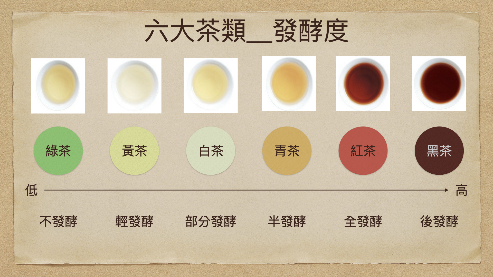

---六大茶類---

綠茶
沒經過發酵，逕行加熱處理的「炒菁」或「蒸菁」茶類，前者包括龍井、碧螺春、六安瓜片等；
後者則有日本的玉露、煎茶、玄米茶等；所謂「清湯綠葉」，二者均具有天然清香、茶湯碧綠等特色。
由於茶葉加熱後不經發酵便進行揉捻乾燥，葉綠色澤得以保存，
據說也最能留住茶葉中的「兒茶素」，被認為常飲能防老、抗氧化，甚至還有防癌的功效。
白茶
屬輕度發酵的茶，發酵度約5~10%。加工時不炒不揉，
只將細嫩且葉背佈滿茸毛的茶葉曬乾或使用文火烘乾，乾茶外觀因而披滿白毫、型態自然。
大多來自中國福建，以銀針白毫最為著名。
黃茶
是微發酵的茶，發酵度約10~20%，由於芽葉茸毛披身、金黃明亮，而有「金鑲玉」的美稱。
在製茶過程中，經過悶堆渥黃，因而形成黃葉黃湯的茶種。
不過由於台灣尚無「悶堆渥黃」的技術，因而幾乎沒有任何產製。
代表茶品有中國湖南的君山銀針、安徽六安的霍山黃芽、四川雅安的蒙頂黃芽等。
青茶
即俗稱的烏龍茶，屬部份發酵茶，發酵度介於綠茶與紅茶之間，並依茶品不同而有15~85%的極大落差，
如輕發酵的文山包種茶或高山茶（15~20%）、中發酵的凍頂茶（20~35%）、重發酵的鐵觀音（40~50%），
以及發酵度更重的白毫烏龍（60~75%）與紅烏龍（85~90%）等。半發酵茶在台灣學界大多稱為「包種茶」，
而今日風行台灣的烏龍茶，則是「半球型包種茶」的俗稱，有別於「條型」的文山包種茶，以及「球型包種茶」的鐵觀音。
紅茶
全發酵茶，發酵度在95%以上，是當今全球產量最多的茶類，也是全世界僅次於白開水而排名第二普及的飲料，占全球茶葉總產量的七成以上。
好的紅茶外觀色澤呈烏黑帶光澤，湯色紅艷透明、滋味醇厚。而與其他茶類最大的不同，
就在於紅茶是最具「包容性」和「變化多端」的茶類，可以添加研製成各式加味紅茶，如檸檬紅茶、麥香紅茶、泡沬紅茶，
以及近年紅透半邊天的「珍珠奶茶」等。知名茶品則有日月潭紅茶、花蓮蜜香紅茶、祁門紅茶、斯里蘭卡烏巴紅茶、印度大吉嶺紅茶等。
黑茶
是後發酵茶，發酵度約80%。最常見以雲南大葉種茶樹為原料、大多壓製為成團成餅的「普洱茶」，少數為散茶，
經十數年甚至數十年「陳化」而成。由於發酵時間較長，因此葉色多呈暗褐色，風味圓融醇厚。
此外，著名的黑茶還包括湖南安化的黑茶（含千兩茶、黑磚茶、花磚茶、茯茶等）、廣西梧州的六堡茶、陝西咸陽的茯茶、安徽祁門蘆溪的六安籃茶等。
♢